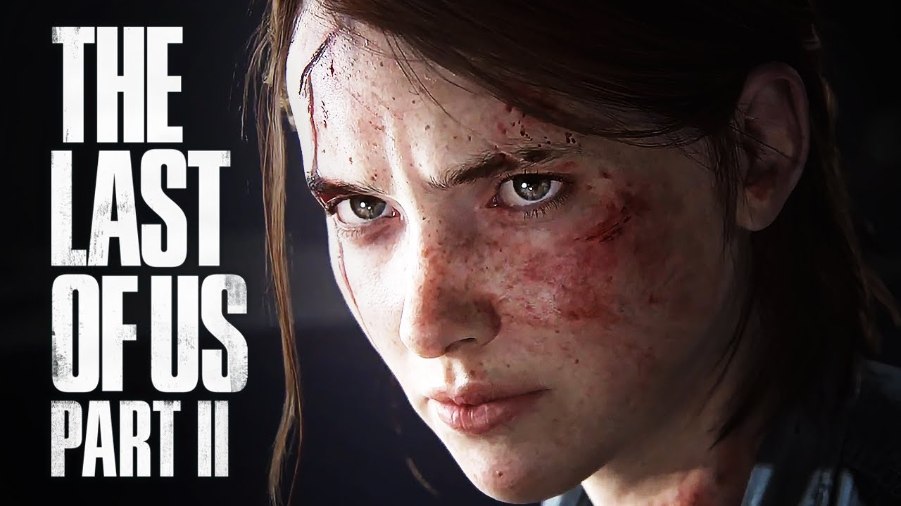
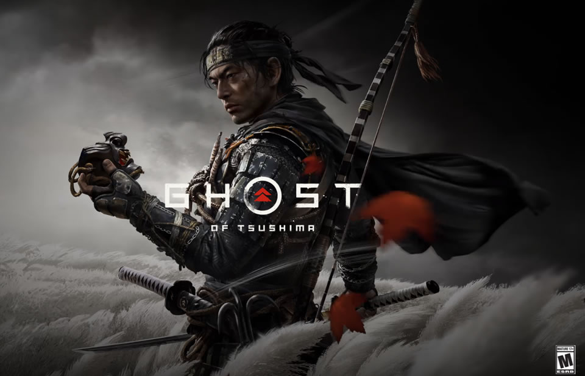
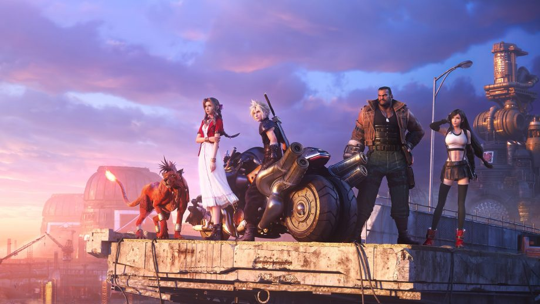
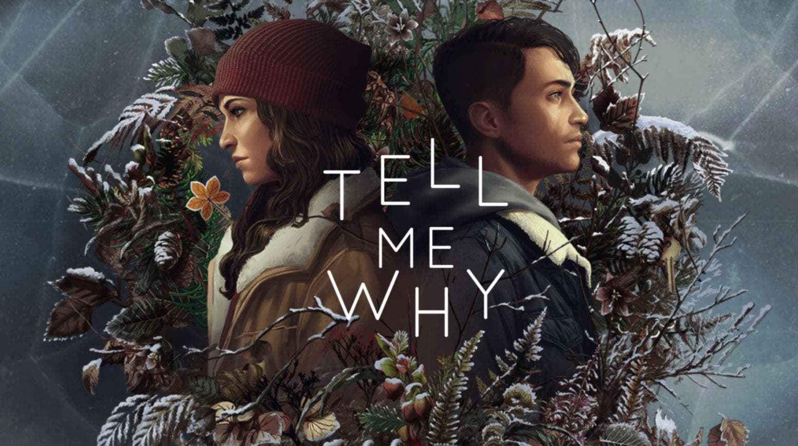
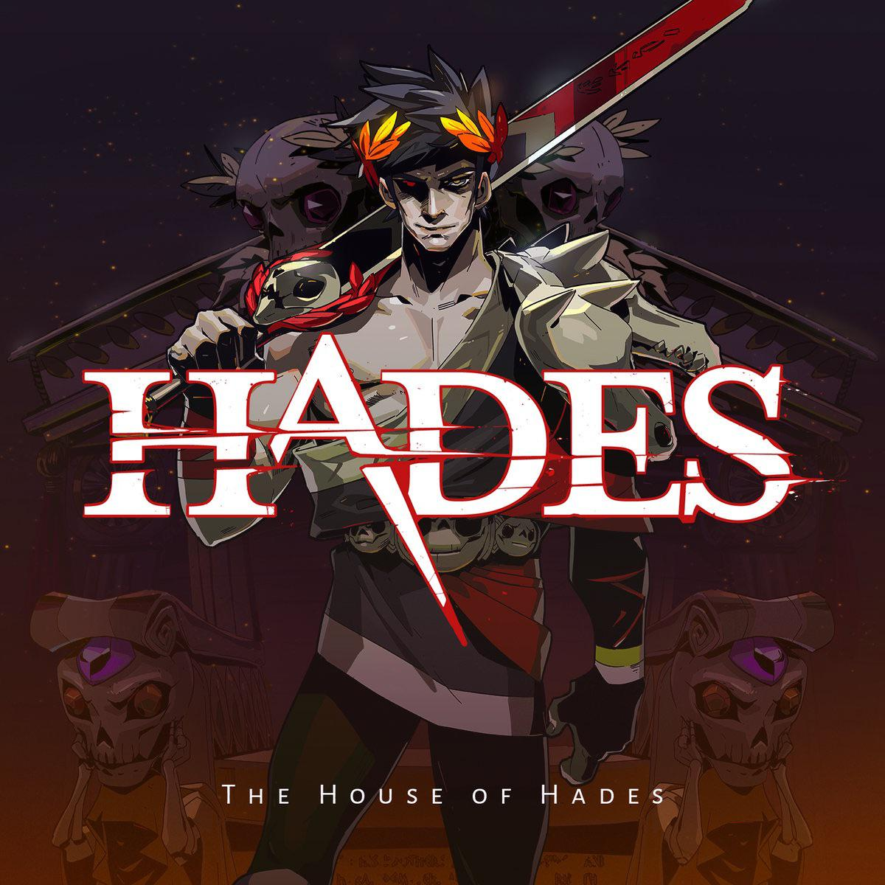
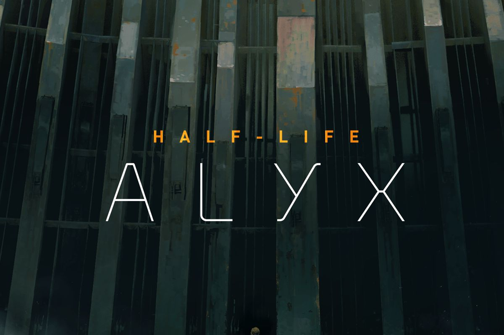
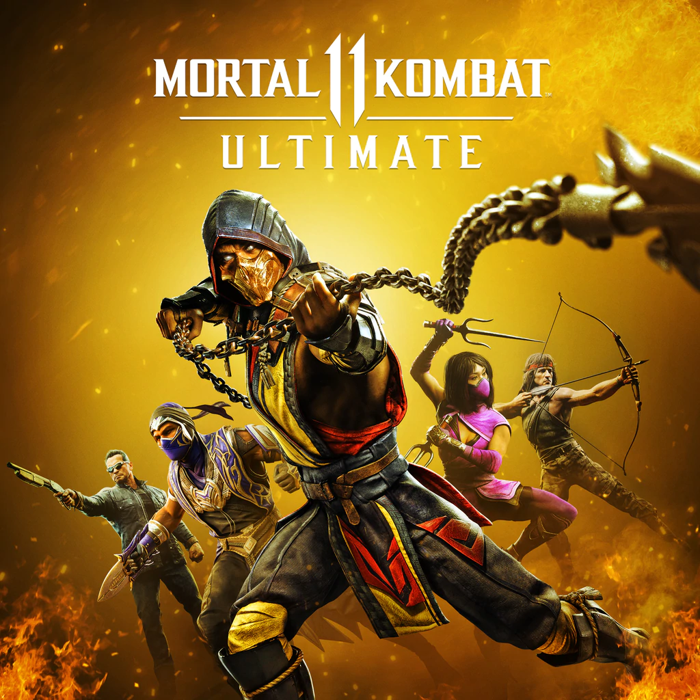
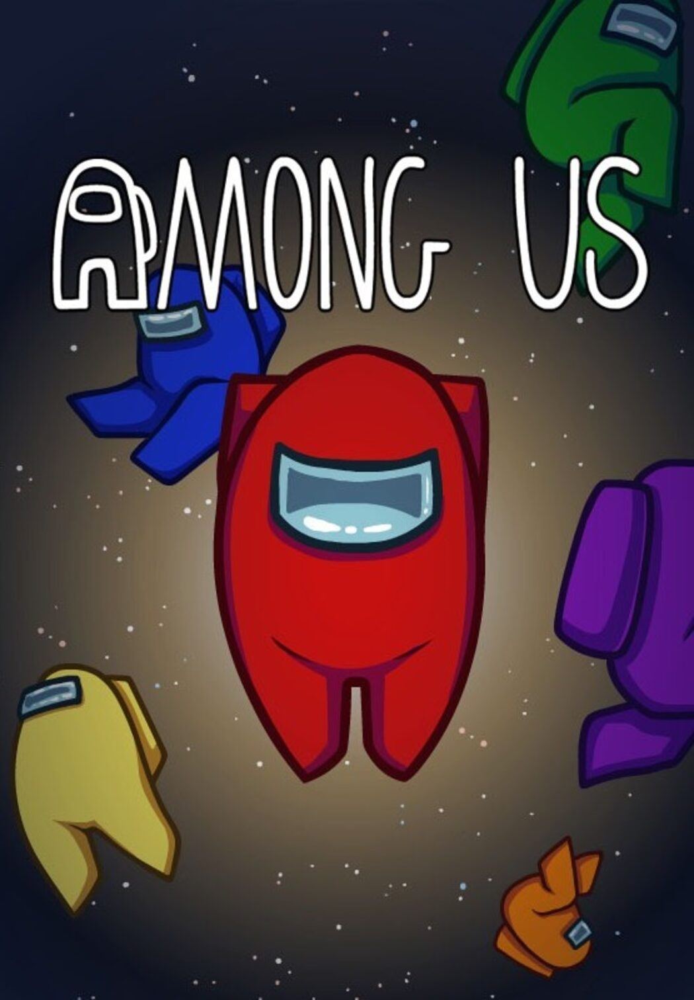

All games are based on game awards 2020
Please be advised: Most games require a Playstation 4 or 5
GAME OF THE YEAR 2020

THE LAST OF US II
Five years after their dangerous journey across the post-pandemic United States, Ellie and Joel have settled down in Jackson, Wyoming. Living amongst a thriving
community of survivors has allowed them peace and stability, despite the constant threat of the infected and other, more desperate survivors. When a violent event
disrupts that peace, Ellie embarks on a relentless journey to carry out justice and find closure. As she hunts those responsible one by one, she is confronted with the
devastating physical and emotional repercussions of her actions.
A Complex and Emotional Story
Experience the escalating moral conflicts created by Ellie’s relentless pursuit of vengeance. The cycle of violence left in her wake will challenge your notions of right versus
wrong, good versus evil, and hero versus villain.
A Beautiful Yet Dangerous World
Set out on Ellie’s journey, taking her from the peaceful mountains and forests of Jackson to the lush, overgrown ruins of greater Seattle. Encounter new survivor groups,
unfamiliar and treacherous environments, and terrifying evolutions of the infected. Brought to life by the latest iteration of the Naughty Dog engine, the deadly characters
and world are more realistic and meticulously detailed than ever before.
Tense and Desperate Action-Survival Gameplay
New and evolved gameplay systems deliver upon the life-or-death stakes of Ellie’s journey through the hostile world. Feel her desperate struggle for survival through
improved features such as high-intensity melee combat, fluid movement, and dynamic stealth. A broad variety of weapons, crafting items, skills, and updates allows you
to personalize Ellie’s capabilities to your play style.
The only way to play the game is to buy yourself a ps4 or ps5 Buy the game at PlayStation store
BEST ART DIRECTION
GHOST OF TSUSHIMA
In the late 13th century, the Mongol empire has laid waste to entire nations along their campaign to conquer the East. Tsushima Island is all that stands between mainland
Japan and a massive Mongol invasion fleet led by the ruthless and cunning general, Khotun Khan. As the island burns in the wake of the first wave of the Mongol assault,
samurai warrior Jin Sakai stands as one of the last surviving members of his clan. He is resolved to do whatever it takes, at any cost, to protect his people and reclaim his
home. He must set aside the traditions that have shaped him as a warrior to forge a new path, the path of the Ghost, and wage an unconventional war for the freedom of
Tsushima.
• In War-Torn Tsushima, Ancient Beauty Endures: In this open-world action adventure, you’ll roam vast countrysides and expansive terrain to encounter rich characters,
discover ancient landmarks, and uncover the hidden beauty of Tsushima.
• The Rise of the Ghost: In his quest to reclaim Tsushima, Jin must seek support from old friends and new unlikely allies. He must break away from tradition, become a new
kind of warrior, and protect what’s left of his home at all costs.
• Mud, Blood, and Steel: Challenge opponents with your katana for an immersive samurai combat experience, master the bow to eliminate distant threats, and develop
stealth tactics to disorient and ambush enemies with surprise attacks.
The only way to play the game is to buy yourself a ps4 or ps5, buy the game at PlayStation store

BEST SCORE AND MUSIC

FINAL FANTASY VII REMAKE
A modern reimagining of one of the most iconic games of all time, Final Fantasy VII Remake harnesses the very latest technology to recreate and expand Square Enix's
legendary RPG adventure for the current generation.
Set in a post-industrial fantasy world that has fallen under the control of the shadowy Shinra Electric Power Company, take on the role of Cloud Strife - a mercenary and
former member of Shinra's elite SOLDIER unit - and team up with anti-Shinra organization Avalanche as they step-up their resistance.
Visit one of gaming's most-beloved worlds with a level of depth and detail only possible in the modern age. Connect with unforgettable characters, engage in incredible
battles, and experience a story that captivated a generation.
GAMES FOR IMPACT
TELL ME WHY
Tell Me Why is the latest narrative adventure game from DONTNOD Entertainment, the studio behind the beloved franchise, Life is Strange. In this intimate mystery, reunited twins Tyler
and Alyson Ronan use their supernatural bond to unravel the memories of their loving but troubled childhood. Set in beautiful small-town Alaska, Tell Me Why features true-to-life
characters, mature themes and gripping choices.
As you conjure up memories of the past, your choices will affect the twins’ relationship, determine the strength of their bond, and shape the course of their lives.
Tell Me Why’s first chapter releases August 27. The second chapter will be available September 3, and the final chapter will be available September 10.
Revisit your past, discover the truth, and shape your future
• Uncover the truth – Use the twins’ supernatural bond to relive and explore their conflicting childhood memories.
• Shape your Story – Influence the relationship between Tyler and Alyson with choices that will determine their future.
• Unlock even more secrets – Match wits with puzzles that deepen the story and open a window into the twins’ fantasy world, “The Book of Goblins.”
Experience true-to-life setting and characters
• Unique characters – Build relationships and solve mysteries through the eyes of compelling and realistic characters.
• Alaskan splendor – Explore locations set in beautiful, highly detailed small-town Alaska in stunning 4K and HDR.
Storytelling with purpose – DONTNOD Entertainment and Xbox Game Studios conducted on-the-ground research and partnered closely with cultural, mental health and gender advocates
to craft a thoughtful, true-to-life experience.
Buy the game at Steam, Xbox

BEST ONGOING

NO MAN'S SKY
Inspired by the adventure and imagination that we love from classic science-fiction, No Man's Sky presents you with a galaxy to explore, filled with unique planets and lifeforms, and
constant danger and action.
In No Man's Sky, every star is the light of a distant sun, each orbited by planets filled with life, and you can go to any of them you choose. Fly smoothly from deep space to planetary
surfaces, with no loading screens, and no limits. In this infinite procedurally generated universe, you'll discover places and creatures that no other players have seen before - and
perhaps never will again.
Now including...
Play with all major updates since launch: Foundation, Pathfinder, Atlas Rises, NEXT, The Abyss, Visions, the 2.0 BEYOND update, Synthesis, Living Ship, Exo Mech, Desolation and the latest
3.0 update, ORIGINS.
An epic voyage to the centre of a shared universe awaits, allowing you to explore, trade, fight and survive alone or with friends.
Embark on an epic voyage
At the centre of the galaxy lies a irresistible pulse which draws you on a journey towards it to learn the true nature of the cosmos. But, facing hostile creatures and fierce pirates, you'll
know that death comes at a cost, and survival will be down to the choices you make over how you upgrade your ship, your weapon and suit.
Find your own destiny
Your voyage through No Man's Sky is up to you. Will you be a fighter, preying on the weak and taking their riches, or taking out pirates for their bounties? Power is yours if you upgrade
your ship for speed and weaponry.
Or a trader? Find rich resources on forgotten worlds and exploit them for the highest prices. Invest in more cargo space and you'll reap huge rewards.
Or perhaps an explorer? Go beyond the known frontier and discover places and things that no one has ever seen before. Upgrade your engines to jump ever farther, and strengthen your
one has ever seen before. Upgrade your engines to jump ever farther, and strengthen your suit for survival in toxic environments that would kill the unwary.
Share your journey
The galaxy is a living, breathing place. Trade convoys travel between stars, factions vie for territory, pirates hunt the unwary, and the police are ever watching. Every other player lives in
the same galaxy, and you can choose to share your discoveries with them on a map that spans known space. Perhaps you will see the results of their actions as well as your own...
Buy the game at Steam, Playstation, Gog, Microsoft
BEST INDIE
HADES
Hades is a god-like rogue-like dungeon crawler that combines the best aspects of Supergiant's critically acclaimed titles, including the fast-paced action of Bastion, the rich
atmosphere and depth of Transistor, and the character-driven storytelling of Pyre.
BATTLE OUT OF HELL
As the immortal Prince of the Underworld, you'll wield the powers and mythic weapons of Olympus to break free from the clutches of the god of the dead himself, while growing
stronger and unraveling more of the story with each unique escape attempt.
BATTLE OUT OF HELL
As the immortal Prince of the Underworld, you'll wield the powers and mythic weapons of Olympus to break free from the clutches of the god of the dead himself, while growing
stronger and unraveling more of the story with each unique escape attempt.
UNLEASH THE FURY OF OLYMPUS
The Olympians have your back! Meet Zeus, Athena, Poseidon, and many more, and choose from their dozens of powerful Boons that enhance your abilities. There are thousands of
viable character builds to discover as you go.
BEFRIEND GODS, GHOSTS, AND MONSTERS
A fully-voiced cast of colorful, larger-than-life characters is waiting to meet you! Grow your relationships with them, and experience thousands of unique story events as you learn about
what's really at stake for this big, dysfunctional family.
BUILT FOR REPLAYABILITY
New surprises await each time you delve into the ever-shifting Underworld, whose guardian bosses will remember you. Use the powerful Mirror of Night to grow permanently stronger,
and give yourself a leg up the next time you run away from home.
NOTHING IS IMPOSSIBLE
Permanent upgrades mean you don't have to be a god yourself to experience the exciting combat and gripping story. Though, if you happen to be one, crank up the challenge and get
ready for some white-knuckle action that will put your well-practiced skills to the test.
SIGNATURE SUPERGIANT STYLE
The rich, atmospheric presentation and unique melding of gameplay and narrative that's been core to Supergiant's games is here in full force: spectacular hand-painted environments and a
blood-pumping original score bring the Underworld to life.
Buy the game at Steam, Epic games, Nintendo

BEST VR/AR

HALF-LIFE-ALYX
Half-Life: Alyx is Valve’s VR return to the Half-Life series. It’s the story of an impossible fight against a vicious alien race known as the Combine, set between the events of Half-Life and
Half-Life 2.
Playing as Alyx Vance, you are humanity’s only chance for survival. The Combine’s control of the planet since the Black Mesa incident has only strengthened as they corral the remaining
population in cities. Among them are some of Earth’s greatest scientists: you and your father, Dr. Eli Vance.
As founders of a fledgling resistance, you’ve continued your clandestine scientific activity—performing critical research, and building invaluable tools for the few humans brave enough
to defy the Combine.
Every day, you learn more about your enemy, and every day you work toward finding a weakness.
ABOUT GAMEPLAY IN VR:
Valve’s return to the Half-Life universe that started it all was built from the ground up for virtual reality. VR was built to enable the gameplay that sits at the heart of Half-Life.
Immerse yourself in deep environmental interactions, puzzle solving, world exploration, and visceral combat.
Lean to aim around a broken wall and under a Barnacle to make an impossible shot. Rummage through shelves to find a healing syringe and some shotgun shells. Manipulate
tools to hack alien interfaces. Toss a bottle through a window to distract an enemy. Rip a Headcrab off your face and throw it out the window.
COMMUNITY-BUILT ENVIRONMENTS
A set of Source 2 tools for building new levels is included with the game, enabling any player to build and contribute new environments for the community to enjoy through Half-Life:
Alyx's Steam Workshop. Hammer, Valve’s level authoring tool, has been updated with all of the game's virtual reality gameplay tools and components.
Buy the game at Steam
BEST FIGHTING
MORTAL KOMBAT 11 ULTIMATE
YOU'RE NEXT!
MK is back and better than ever in the next evolution of the iconic franchise. The all new Custom Character Variations give you unprecedented control of your fighters to
make them your own. The new graphics engine showcases every skull-shattering, eye-popping moment, bringing you so close to the fight you can feel it. Featuring a roster of new
and returning Klassic Fighters, Mortal Kombat's best-in-class cinematic story mode continues the epic saga over 25 years in the making.
MATURE CONTENT DESCRIPTION
The developers describe the content like this:
This Game may contain content not appropriate for all ages, or may not be appropriate for viewing at work: Frequent Violence or Gore, General Mature Content
Buy the game at Steam

BEST SPORTS/RACING

TONY HAWK’S PRO SKATER 1+2
Drop back in with the most iconic skateboarding games ever made. Play the fully-remastered Tony Hawk’s™ Pro Skater™ & Tony Hawk’s™ Pro Skater™ 2 games in one
epic collection, rebuilt from the ground up in incredible HD.
- Skate as the legendary Tony Hawk and the original pro roster, plus new pros
- Skate to songs from the era-defining soundtrack along with new music
- Hit insane trick combos with the iconic handling of the Tony Hawk’s™ Pro Skater™ series
- Play all the original game modes and go head-to-head with local 2-Player modes
- Show off your style and creativity with upgraded Create-A-Park and Create-A-Skater features
- Take your sessions online and compete against players from around the world in Multiplayer modes and leaderboards
Break skateboarding boundaries, show off your own style, and be part of the next generation of skaters and creators with Tony Hawk's™ Pro Skater™ 1 + 2.
Buy the game at Epic games, Playstation, Xbox
BEST MULTIPLAYER
AMONG US
Play with 4-10 player online or via local WiFi as you attempt to prepare your spaceship for departure, but beware as one or more random players among the Crew are Impostors bent on
killing everyone!
Originally created as a party game, we recommend playing with friends at a LAN party or online using voice chat. Enjoy cross-platform play between Android, iOS and PC.
The crew
- Win by completing tasks to prepare the ship or ejecting all Impostors.
- React quickly to undo the Impostor's sabotages.
- Check the Admin map and Security cameras to keep tabs on other Crewmates.
- Report any dead bodies immediately to start discussion of who the suspected Impostor is.
- Call emergency meetings to discuss suspicious behavior.
- Vote to eject suspected Impostors.
The Impostor
- Kill crewmates and frame bystanders.
- Pretend to run tasks to blend in with the crewmates.
- Sneak through the vents to quickly move about the ship.
- Use sabotages to cause chaos and divide the crew.
- Close doors to trap victims and kill in private.
Buy the game at Steam, Epic games, Nintendo

Got a game? Nice!!!